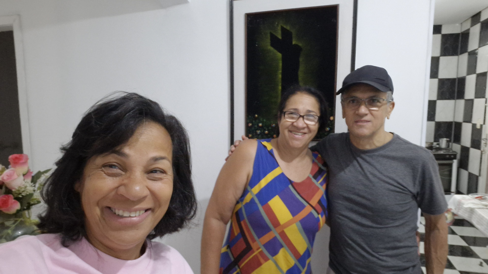

Resumo da viagem
Saímos de São Paulo no domingo, 07/09/25, por volta de 7:00, com destino a Presidente Prudente (558 km). Dormimos na casa da tia da Teresa, Sra. Terezinha. Na segunda-feira, saímos por volta de 7:30 e chegamos em Bonito-MS (632 km), onde ficamos até domingo, dia 14/09/25.
De lá seguimos para o Geoparque Caminhos dos Canyons. Planejamos dormir em Guarapuava-PR, onde chegamos por volta das 17:00 (868 km). Saímos na segunda-feira, dia 15/09/25, e chegamos em Torres-RS por volta das 16:00 (828 km).
Ficamos quatro dias em Torres e fomos duas vezes à cidade de Praia Grande: a primeira para fazer voo de balão e a segunda para a trilha do Rio do Boi.
No dia 19/09/25, seguimos para Cambará do Sul-RS, onde fizemos uma trilha nas bordas do Canyon Fortaleza. À noite, dormimos em uma cabana chamada Romeu & Julieta. No dia seguinte, fomos ao Canyon Itaimbezinho, onde fizemos uma trilha de bicicleta na borda. Saímos de lá por volta de 13:00 e pegamos a estrada para Balneário Camboriú-SC. Nos hospedamos em um hotel, saímos para comer alguma coisa e caminhamos um pouco pela orla da praia.
No domingo, dia 21/09/25, havia previsão de forte tempestade. Fomos de bicicleta pela ciclovia da praia e depois pegamos o teleférico. Ficamos pouco tempo nas atrações, pois o tempo estava mudando rapidamente. Resolvemos voltar para São Paulo. Saímos de Balneário Camboriú por volta de meio-dia e chegamos em casa por volta das 21:00. Esse foi o pior trecho da viagem, totalizando 4.514,1 km.
Gastos da viagem
Combustível: abastecemos 13 vezes – total de R$ 1.669,83Pedágios: 36 - total de R$ 299,10
Hospedagem: 5 paradas - total de 1.841,00
Mercado: 5 compras total de R$ 292,62
Gasto aproximado: R$ 4.102,55
Gastos com atrações (aprox.): R$ ...
Total aproximado: R$
- Bonito-MS
- Guarapuava-PR
- Torres-RS
- Cambará do Sul-RS
- Balneário Camboriú-SC
Sra. Teresinha
Agradescer a dona Teresinha, tia da Teresa que mora em Presidente Prudente onde dorminos antes de seguir a viagem.
Links Importantes:
SESC,Calcular Rota
Geoparque
Caminhos dos
Câneos do Sul